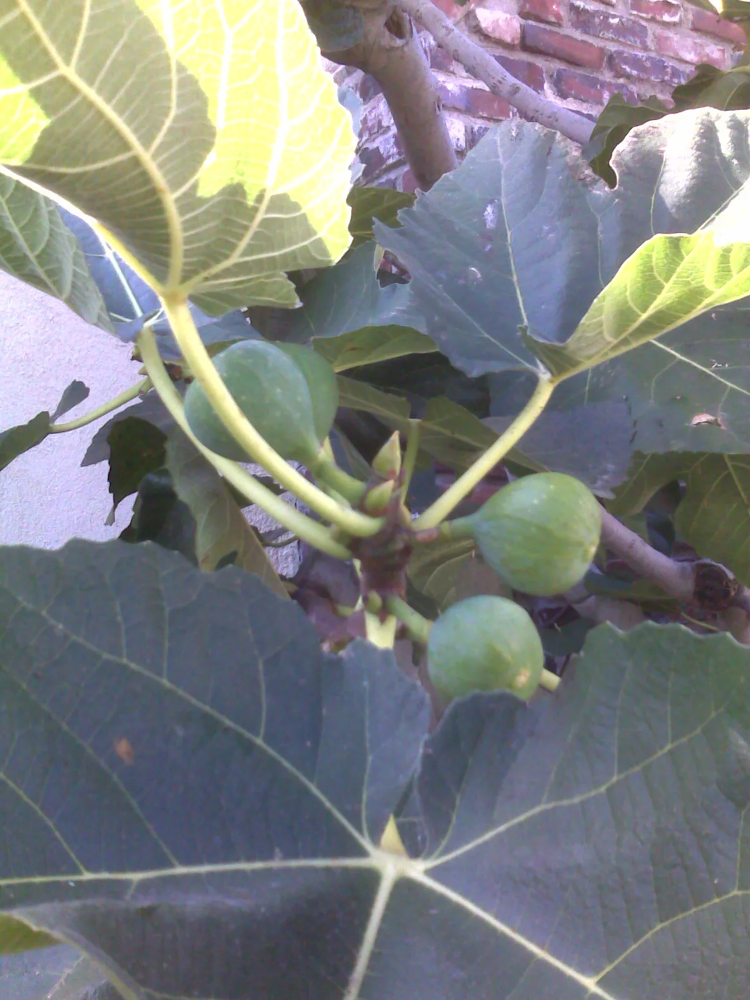

▲ 무화과나무. 영암은 국내 대표 무화과 산지로, 매년 9월 수확철에 맞춰 축제가 열린다 ⓒ Wikimedia Commons (CC BY-SA 3.0)
'무화과축제'라는 이름만 보면 시식과 판매가 전부일 것 같지만, 실제 프로그램표를 열어보면 노래방 대결부터 승마 체험까지 예상 밖의 구성이 이어진다.

▲ 주차장(자료사진). 정확한 주차 정보는 방문 전 영암군청이나 축제 공식 채널에서 확인하는 것이 안전하다 ⓒ Wikimedia Commons (CC BY 2.0)
1. 첫날 — 노래방 대결로 시작
축제 첫날인 4일은 오후 2시 '도전 무화과 노래방'을 시작으로 난타공연, 영암 특산품 깜짝 경매, 무화과 시식회, 품바공연이 이어진다. 태권도와 밸리댄스 등 지역 공연은 오후 5시부터 진행된다. 무화과라는 테마 아래 다양한 볼거리가 촘촘하게 짜여 있는 셈이다.
2. 마지막 날 — 가요제로 마무리

▲ 어린이 물놀이 체험(자료사진). 영암무화과축제도 어린이 물놀이장을 함께 운영한다 ⓒ Wikimedia Commons (CC0)
마지막 날인 6일에는 오전 11시 '톡톡쏘는 라디오'를 시작으로 무화과 보물 풍선 터트리기와 시식회, 청소년 페스티벌, 관악 앙상블, 품바공연이 이어진다. 오후 5시 30분부터는 영암 무화과 가요제가 열리고, 폐막식은 오후 6시 30분부터 진행된다.
3. 가족 단위 체험 — 승마부터 물놀이까지

▲ 차량용 카시트. 가족 단위로 방문한다면 이동 중 카시트 규정도 함께 챙기는 것이 좋다 ⓒ CarPrism
축제장에는 어린이 물놀이장과 승마체험, 무화과 얼굴 그림 그리기, 추억의 오락기, 전통놀이 등 가족 단위 방문객을 위한 체험 프로그램이 다양하게 마련됐다. 무화과 쿠키 만들기 체험은 5일과 6일 오후 1시, 3시, 5시에 운영되니 시간을 맞춰 참여할 수 있다.
4. 방문 전 확인할 것
방문 팁
- 날짜별로 프로그램이 다르므로 원하는 프로그램의 날짜를 미리 확인하자.
- 체험 프로그램(쿠키 만들기 등)은 운영 시간이 정해져 있어 시간을 맞춰 방문해야 한다.
- 정확한 주차 정보는 영암군청이나 축제 공식 홈페이지에 문의하는 것이 좋다.
5. 정리
체크포인트
- 2026 영암무화과축제는 9월 4~6일 전남농업박물관에서 열린다.
- 첫날은 노래방 대결로, 마지막 날은 가요제로 마무리된다.
- 승마체험·물놀이장 등 가족형 체험 프로그램이 풍부하다.
- 체험 프로그램은 운영 시간이 정해져 있어 사전 확인이 필요하다.